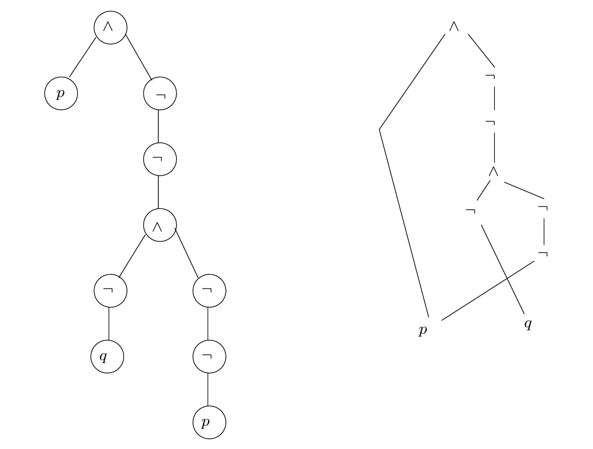
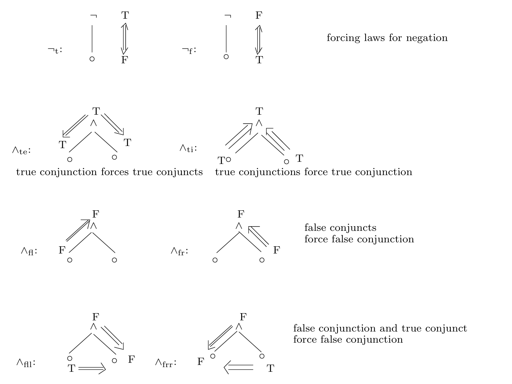
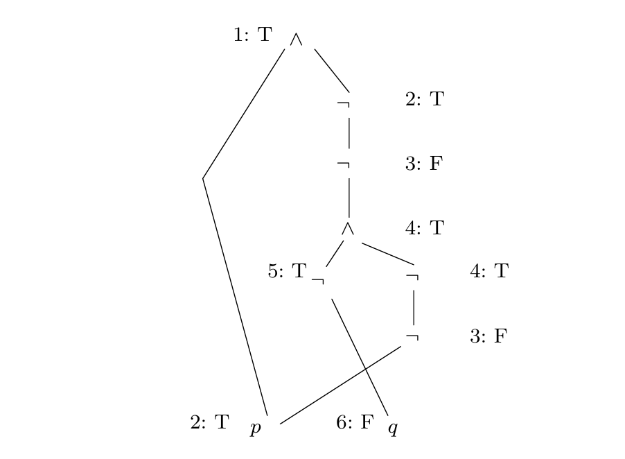

命题逻辑
声明语句
命题逻辑(propositional logic) 是一种基于命题（可判断真假的陈述语句）的逻辑。命题逻辑将自然的陈述语句转化为字符串和符号，一方面我们能够在保持陈述语句编码完整性，另一方面我们将陈述语句进行了压缩以便专注于逻辑推断机制。
考虑某些 原子的(atomic) 陈述语句（或者说不可分解的），例如:
我们为每一个语句分配唯一的符号 \( p,q,r, \dots \)，这样就可以按组合的方式构造更加复杂的语句。
为了构造更复杂的语句，需要一些构造规则：
\(\neg\): \(p\)的 否定(negation) 是\(\neg p\)
\(\vee\) : 给定\(p\)和\(q\)两个语句，我们使用\(p \vee q\)表示它们“至少有一个为真”，并称之为 析取(disjunction)
\(\wedge\) : 给定\(p\)和\(q\)两个语句，我们使用\(p \wedge q \)表示“它们均为真”，并称之为 合取(conjunction)
\(\rightarrow\) : 给定\(p\)和\(q\)两个语句，我们使用\(p \rightarrow q\)表示 “当\(p\)为真时\(q\)也为真”，并称其中的\(p\)为 假设(assumption)、\(q\)为结论，并称语句\(p \rightarrow q\)为 蕴含(implication)。
惯例： 习惯上，结合性优先级 \( \ \neg \ \) > \(\ \wedge \ \) > \(\ \vee \ \) > \(\ \rightarrow \ \)，且\(\rightarrow\)为右结合的。
自然演绎
我们需要一些规则以便能够从给定的一系列前提中推导出结论，在自然演绎中，我们称这些规则为 证明规则(proof rules)。
假设我们有一系列称为 前提(premises) 的公式\(\phi_1,\phi_2,\dots,\phi_n\)，以及另外一个称为 结论(conclusion) 的公式\(\psi\)，通过对前提使用一系列的证明规则最终可以得到结论，我们将这个含义表示为
并称之为 相继式(sequent)。 如果我们可以找到它的一个证明，那么称之为 有效的(valid) 。
自然演绎规则
合取规则
“与”引入规则（and-introduction）
“与”消去规则（and-elimination）
双重否定规则
“双重否定”引入规则 (double-negation-introduction)
“双重否定”消去规则（double-negation-elimination）
蕴含规则
“蕴含”消去规则（implies-elimination）
MT规则（modus tollens）
“蕴含”引入规则（implies-introduction）
这里与其他的规则不同的是，使用了一个方框标志，它表示暂时假设\(\phi\)成立可以证明\(\psi\)成立。
注意：
方框内外推导并无本质差别
当处于方框中时，可以使用方框内上方以及方框外部的前提推导新的结论
方框结束后，不能随意使用方框内的结论（因为其存在特定的假设），除非有演绎规则的支持
析取规则
“析取”引入规则（or-introduction）
“析取”消去规则（or-elimination）
否定规则
“否定”消去规则（not-elimination）
“否定”引入规则（not-introduction）
矛盾律
矛盾消去规则（bottom-elimination）
反证法
反证法（proof by contradiction, PBC）
排中律
排中律（law of the excluded middle, LEM）
树状表示法与线性表示法
在自然演绎规则一节中，我们使用树状表示法进行表示；但对于长推导来说，使用树状表示推导过程会导致一些书写麻烦，一种替代方法是使用 线性表示(linear presentation)。我们将在下面进行展示。
派生的规则
在所有的自然演绎规则中，某些规则并不“基本”，它们可以使用基本的规则派生出来。接下来我们使用线性表示法进行推导。
MT
\(\neg \neg_i\)
PBC
LEM
可证等价
令\(\phi\)和\(\psi\)为命题逻辑中的公式，我们称它们可证等价当且仅当两个相继式\(\phi \vdash \psi\)和\(\psi \vdash \phi\)都是有效的(valid)。对于这种双向的可证，我们也可以简写为\(\phi \dashv \vdash \psi\)。
经典逻辑与直觉逻辑
在经典逻辑中，逻辑学家承认反证法、排中律、“双重否定”消去律；但另一种直觉注意逻辑中，逻辑学家认为这些规则并没有直接证明，即缺少构造性。
对于反证法，直觉主义认为为了证明\(\phi\)，我们需要直接证明，而不是证明\(\neg \phi\)是不可能的；对于排中律，必须证明 \(\phi\)或者\(\neg \phi\)成立，如果都不能证明，那么则不能承认排中律；另外，直觉主义逻辑拒绝接受双重否定消去律因为我们使用其作用于其他接受的规则上（因此接受双重否定消去律意味着接受PBC和LEM）。
形式语言下的命题逻辑
我们必须明确，对于我们声明的规则来说，只要我们构造的公式满足规则的要求，它就应该是有效的。
我们必须定义 良形式(well-formed) 的公式，以保证其具有意义。命题逻辑中的良形式公式当且仅当通过有限次以下规则才能得到：
原子(atom): 每个命题原子\(p,q,r, ...\)和\(p_1,p_2, ...\)是良形式的公式
\(\neg\): 如果\(\phi\)是良形式的公式，那么\(\neg \phi\)也是
\(\wedge\): 如果\(\phi\)和\(\psi\)是良形式的公式，那么\(\phi \wedge \psi\)也是
\(\vee\): 如果\(\phi\)和\(\psi\)是良形式的公式，那么\(\phi \vee \psi\)也是
\(\rightarrow\): 如果\(\phi\)和\(\psi\)是良形式的公式，那么\(\phi \rightarrow \psi\)也是
以上规则也可以以 BNF语法(Backus Naur form) 定义:
命题逻辑的语义
逻辑连接词的含义
在现实世界中，我们往往关注某个陈述的“真假” – 即真值。真值集合中包含两个元素 T 和 F，分别代表“真”和“假”。
在对于一个公式而言，它要么是原子的，要么是由其他公式通过逻辑连接词构造而成。对于前者，我们通过现实世界来赋予其真值；对于后者，一旦我们得到其中全部原子的真值，就可以通过逻辑连接词计算出它的真值，可以将逻辑连接词视为函数，根据参数的真值得到对应的真值结果。
\(\wedge\)
\(\vee\)
\(\rightarrow\)
\(\neg\)
\(\top\)
\(\bot\)
给一个公式\(\phi\)中每一个命题的原子分配一个真值，这个过程被称为一个 赋值(valuation) 或者 模型(model)。
在此之前为了判断一个相继式是否有效，我们需要寻找一个证明来验证。但在真实世界中，我们会关注公式的“真假”。为了便于区分，我们定义前提于结论的另一种关系：
我们称\(\models\)为 语义蕴含(semantic entailment) 关系，这表明当前提全部为真时，结论也为真。
数学归纳法
数学归纳法内容如下：
基础情形(Base case) ： 自然数1拥有性质\(M\)，记为\(M(1)\)
归纳步骤(Inductive step) ： 如果
n是一个自然数，当我们假定其具有性质\(M(n)\),那么我们可以得出\( n + 1\)拥有性质\(M( n + 1)\)
当以上两条信息满足，则每个自然数都满足性质\(M(n)\)， 在归纳步骤中的假设\(M(n)\)被称为 (I)归纳假设(induction hypothesis) .
另外数学归纳法拥有一个变种，该变种将归纳步骤中的归纳假设改为\(M(1) \wedge M(2) \wedge \dots \wedge M(n)\)，并取消了基础情形。
提示： 取消了基础情形是因为
M(1)的证明已经包含在了归纳步骤中
命题逻辑的可靠性
给出一个\(\phi_1, \phi_2, \dots , \phi_n \vdash \psi\)的证明，是否存在当\(\psi\)为假时，所有的前提\(\phi_1,\phi_2, \dots , \phi_n \)仍然为真？即命题逻辑是否具有 可靠性(soundness) ？事实是肯定的，令\(\phi_1, \phi_2, \dots , \phi_n\) 和 \(\psi\) 为命题逻辑公式。如果\(\phi_1, \phi_2, \dots , \phi_n \vdash \psi\)是有效的，则\(\phi_1, \phi_2, \dots , \phi_n \models \psi\)成立。
命题逻辑的完备性
当\(\phi_1,\phi_2,\dots,\phi_n \models \psi\)成立，则存在一个相继式 \(\phi_1,\phi_2,\dots,\phi_n \vdash \psi\) 的自然归纳的证明。
范式
本节讨论检验语义蕴含成立的（除定义外）其他替代性方法。
语义等价性、可满足性和有效性
令\(\phi\)和\(\psi\)为命题逻辑公式，我们称它们 语义等价(semantically equivalent) 当且仅当 \(\phi \models \psi\)且\(\psi \models \phi\)均成立，此时可以写作\(\phi \equiv \psi\)。特别地，如果\(\models \phi\)，我们称\(\phi\)为 有效的(valid)。
实际上，由于可靠性和完备性，语义等价和 可证等价(provable equivalence) 是一致的。
[引理] 给定命题逻辑公式\(\phi_1,\phi_2,\dots,\phi_n\) 和\(\psi\)， 则\( \phi_1,\phi_2,\dots,\phi_n \models \psi \)成立当且仅当\(\models \phi_1 \rightarrow (\phi_2 \rightarrow \dots \rightarrow (\phi_n \rightarrow \psi))\)成立
下面介绍 合取范式(conjunctive normal form，CNF): 一个文字\(L\)要么为一个原子\(p\)要么为一个原子的否定\(\neg p\)，一个公式\(C\)是一个合取范式如果其是若干 子句(clauses) 组成，其中子句是若干文字的析取。
[引理] 一组文字的合取 \(L_1 \vee L_2 \vee \dots \vee L_m\)是有效的当且仅当存在\(1 \le i,j \le m\)使得\(L_i\)是\(\neg L_j\)
对于一个合取范式，其为有效的，当且仅当每个子句都是有效的，而每个子句的有效性可以根据以上引理验证，因此，合取范式非常容易对公式的有效性进行检查。
给定一个命题逻辑公式\(\phi\)，我们称\(\phi\)是 可满足的(satisfiable) ，如果它的一个赋值可以使其为真。另外\(\phi\)为可满足的，当且仅当\(\neg \phi\)不是有效的。
如何计算合取范式？一种特殊的场景是，当我们已经拥有了真值表，那么我们可以根据真值表快速写出合取范式。
例如：
我们将所有导致\(\phi\)为\(F\)的赋值（行）全部其出来，组成一个子句，以便其能够为\(F\)（进一步地，当且仅当此时为假）。
我们将这些子句合取，组成合取范式；此时，当且仅当赋值为真值表中使\(\phi\)为假的情况，才能使合取范式为假，其余情况为真，这与真值表是完全一致的，因此该合取范式与\(\phi\)等价，即为\(\phi\)的合取范式。
合取范式与有效性
实际上，任何公式都可以被转换为等价的合取范式。仪以便我们可以通过等价的合取范式检查公式是否是有效的。
我们称该转换的算法为\(CNF\)，\(CNF\)应当满足以下的要求：
(1) \(CNF\)对于任意的命题逻辑公式的输入都会终止
(2) 对于每个这样的输入，\(CNF\)输出一个等价的公式
(3) 所有的输出都满足合取范式CNF
对于任意一个公式，首先需要去除蕴含符号，我们称去除操作为\(IMPL\_FREE\),该操作将公式中的任何子公式中形式\(\psi \rightarrow \eta\)转换为\(\neg \psi \vee \eta\).因此这个过程也是个递归过程。
在使用蕴含消除操作后，可能会引入双重否定以及对于非原子公式的否定，我们需要保证否定必须作用在原子上（也就是说不能出现以上两种情况），即转化为 否定范式(negation normal form, NNF).
function NNF(\(\phi\)):
/* 前置条件： \(\phi\)中不包含蕴含*/
/* 后置条件： \(NNF(\phi)\) 计算得到\(\phi\)的否定范式*/
begin function
case
\( \phi\)是一个文字： 返回\(\phi\)
\(\phi\)是\(\neg\neg\phi_1\): 返回\(NNF(\phi_1)\)
\(\phi\)是\(\phi_1 \wedge \phi_2\): 返回\(NNF(\phi_1) \wedge NNF(\phi_2)\)
\(\phi\)是\(\phi_1 \vee \phi_2\): 返回\(NNF(\phi_1) \vee NNF(\phi_2)\)
\(\phi\)是\(\neg(\phi_1 \wedge \phi_2)\): 返回\(NNF(\neg\phi_1) \vee NNF(\neg\phi_2)\)
\(\phi\)是\(\neg(\phi_1 \vee \phi_2)\): 返回\(NNF(\neg\phi_1) \wedge NNF(\neg\phi_2)\)
end case
end function
一旦完成了否定范式的转换，我们只需为\(CNF\)算法考虑处理以下三种情形：
如果\(\phi\)是一个文字，它已经在定义中，因此输出为\(\phi\)
如果\(\phi\)等于\(\phi_1 \wedge \phi_2\)，我们递归在每个\(\phi_i\)中调用\(CNF\)，并得到的结果\(\eta_i\)合取，得到\(\eta_1 \wedge \eta_2\)作为输出
如果\(\phi\)等于\(\phi_1 \vee \phi_2\)，我们仍然进行递归调用，得到结果\(\eta_i\)，但由于这些结果未必是文字，因此不能简单地将它们析取，我们暂时将转换过程称为\(DISTR(\phi_1,\phi_2)\).
用伪代码可以写为：
function \(CNF(\phi)\):
/* 前提条件： \(\phi\)没有蕴含且是否定范式 */
/* 后置条件： \(CNF(\phi)\)计算得到\(\phi\)的一个等价的CNF */
begin function
case
\(\phi\)是一个文字： 返回\(\phi\)
\(\phi\)是\(\phi_1 \wedge \phi_2\): 返回\(CNF(\phi_1) \wedge CNF(\phi_2)\)
\(\phi\)是\(\phi_1 \vee \phi_2\): 返回\(DISTR(CNF(\phi_1,\phi_2))\)
end case
end function
下面考虑如何解决\(DISTR\)操作，实际上，顾名思义该算法实际上利用分配律进行操作：
function \(DISTR(\eta_1,\eta_2)\):
/* 前置条件： \(\eta_1\)和\(\eta_2\)都是CNF*/
/* 后置条件：\(DISTR(\eta_1,\eta_2)\)计算\(\eta_1 \vee \eta_2\)的一个CNF*/
begin function
case
\(\eta_1\)是\(\eta_{11} \wedge \eta_{12}\): 返回 \(DISTR(\eta_{11},\eta_2) \wedge DISTR(\eta_{12},\eta_2)\)
\(\eta_2\)是\(\eta_{21} \wedge \eta_{22}\): 返回\(DISTR(\eta_1,\eta_{21}) \wedge DISTR(\eta_1,\eta_{22})\)
否则返回\(\eta_1 \vee \eta_2\)
end case
end function
Horn子句及可满足性
合取范式在检查公式的有效性上非常容易，但总体来讲它并不容易检验满足性。实际上，有很多方法高效检验可满足性的方法，Horn公式(Horm formula) 就是其中之一。
一个Horn公式是一个命题逻辑下的公式\(\phi\)，如果其能够使用以下语法生成一个H的实例：
我们称每个C的实例为一个Horn子句。Horn公式是若干Horn子句的合取，一个Horn子句是一个蕴含，该蕴含的假设A是一个类型为P的若干命题的合取，该蕴含的结论的类型仍然为P。
下面给出根据Horn公式判定可满足行的算法：
function \(Horn(\phi)\):
/* 前提条件： \(\phi\) 是一个Horn 公式 */
/* 后置条件： \(HORN(\phi)\) 判定\(\phi\)的可满足性 */
begin function
标记所有出现的\(\top\)
while 当存在一个子句\(P\_1 \wedge P\_2 \wedge \dots \wedge P\_{k_i} \rightarrow P'\)
使得所有的\(P\_j\)都被标记但\(P'\)没有被标记
标记\(P'\)
end while
如果\(\bot\)被标记那么返回‘不可满足的’；否则返回‘可满足的’。
end function
该算法需要保证对所有Horn公式的输入终止，且输出是正确的。
[定理] 算法\(HORN\)对于Horn公式可满足行判定问题是正确的，且对于有\(n\)个原子的公式来说，不超过\(n + 1\)此循环。进一步地，\(Horn\)总是终止在正确的输入上。
事实上，由于每次循环必然会标记一个未标记的\(P\)，且每次标记是完全的（即不存在缺标的情况），因此while循环最终会比公式中原子数量多一。因此，我们知道该算法必然终止。在该算法中，标记意味着如果公式是可满足的，那么当公式赋值为真时，被标记的\(P\)也将取真，我们可以使用数学归纳法验证这一点。
SAT 求解器
\(Horn\)算法可以给出公式满足时哪些原子需要赋值为真，我们可以将这个思想进行扩展，转变为对子式进行一般性标注：“对于任意公式\(\phi\)取值为真时，所有标注的子式均赋值为相应标注的值”。
线性求解器
我们将在公式的解析树上执行此标注算法，但在此之前需要将公式进行转换\(T\)：
转换后满足以下BNF定义：
且转换前后时语义等价的，它们拥有相同的原子。此时，原公式\(\phi\)可满足的当且仅当转换后的公式\(T(\phi)\)时可满足的；进一步地，当\(\phi\)取值为真时，\(\phi\)的赋值集合与\(T(\phi)\)中的赋值集合相等（即各原子赋值相同）。
公式的解析树需要进一步地共享相同的子公式，进而形成一个 有向无环图(directed acyclic graph, DAG)。
下面给出一个示例：
公式\(\phi = p \wedge \neg (q \vee \neg p)\)经过转换得到\(T(\phi) = p \wedge \neg \neg (\neg q \wedge \neg \neg p)\)，进而有如下图所示的解析树和相应的DAG：

现在我们需要一系列规则检验该公式是否是可满足的：

根据规则对DAG进行标记：

上图中，标记按照时间戳进行，即首先标注’1’为真，接着根据规则标记两个’2’为真，…，依此类推。
实际上，我们还可以使用SAT 求解器判定一个相继式是否有效，对于 \(\phi \vdash \psi\),其有效当且仅当\(\vdash \phi \rightarrow \psi\)是定理，当且仅当\(\neg (\phi \rightarrow \psi)\)不是可满足的。
立方求解器
在线性求解器中，我们期望两种情况：我们检测到矛盾的约束，这意味着公式不具有可满足性；我们在所有结点上得到一致的约束，公式具有可满足性。然而，实际上存在另外一种情况：我们不能给到所有结点约束，因此无法判定可满足性。
例如，\(\neg (\phi_1 \wedge \phi_2)\)就无法使用线性求解器求解，即使它具有可满足性。
应用排中律LEM可以改善这一问题，任选一个还没有被标注的结点n：
向结点n临时标记T或F，并继续进行推导（此时的标记全部为临时标记），如果得到矛盾约束，则擦除所有的临时标记，并将结点n的临时标记取反（即T变F，F变T）
如果所有结点都得到了一致性的约束，则我们称该公式可满足的，并终止算法
如果以上两种情况都不符合，则将两次临时标记中标记一致的部分更改为永久标记
然而，即使这样Cublic SAT 求解器仍然可能失败，即没有一致的临时标记，此时求解算法只能终止